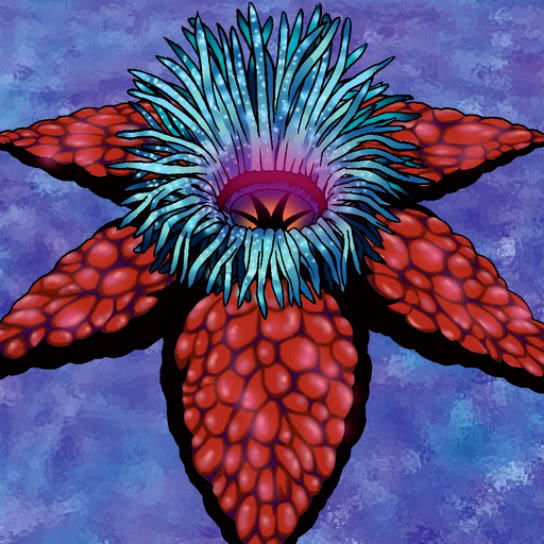

Hitodenchak

Description: "Gains 1000 bonus points when engaged in battle with MACHINE monsters."
STATS
ATK: 600
DEF: 700DECK COST
Deck Cost per Card: 18EFFECT NOT IMPLEMENTED
Fusion List (2 Possible Fusions)
- Hitodenchak + Electric Snake = Bolt Escargot
- Hitodenchak + LaLa Li-oon = Bolt Escargot